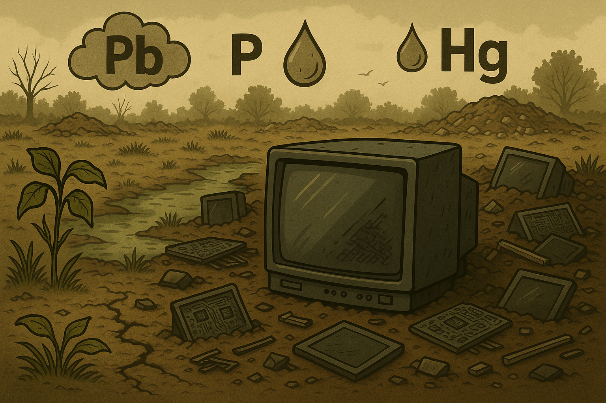

O descarte inadequado de televisores representa um sério problema ambiental e de saúde pública. Esses aparelhos contêm materiais perigosos, como chumbo e mercúrio, além de metais valiosos, exigindo tratamento especializado no descarte.
Os televisores mais antigos, como os de tubo de raios catódicos (CRT), são particularmente preocupantes. Eles possuem grandes quantidades de chumbo no interior da tela, além de fósforo e mercúrio — substâncias que, em contato com o solo ou a água, podem contaminar o meio ambiente e afetar diretamente a saúde de pessoas e animais.
Já os televisores modernos, como os de LCD, LED e plasma, embora mais leves e eficientes, também requerem atenção. Eles contêm placas eletrônicas, plásticos de engenharia, vidro tratado e metais como ouro, prata, cobre e alumínio — que podem ser reciclados e reutilizados, reduzindo a extração de recursos naturais e a geração de lixo.
Jogar televisores no lixo comum ou deixá-los em terrenos baldios representa uma ameaça ao meio ambiente e à saúde pública. Veja os principais riscos:
Contaminação do solo e da água: Televisores contêm metais pesados como chumbo, mercúrio e cádmio. Quando descartados de forma inadequada, esses materiais podem infiltrar-se no solo, contaminando lençóis freáticos e cursos d’água que abastecem comunidades.
Acúmulo de lixo eletrônico: Devido ao seu tamanho, os televisores ocupam grande espaço em aterros e lixões. Isso contribui para o acúmulo de resíduos eletrônicos, dificultando a gestão de resíduos sólidos e impactando negativamente o ambiente urbano.
Riscos à saúde humana: O contato com substâncias tóxicas presentes nos televisores pode causar problemas neurológicos, respiratórios, renais e até câncer. Crianças e catadores informais estão entre os mais afetados.
Desperdício de materiais valiosos: Os televisores contêm metais como cobre, alumínio e até ouro, além de vidro e plásticos recicláveis. O descarte inadequado impede a recuperação desses materiais, aumentando a necessidade de extração de recursos naturais e gerando mais poluição.
O descarte correto dos televisores evita danos ambientais e possibilita o reaproveitamento eficiente de seus componentes. Veja as principais formas de fazer isso:
Leve a pontos de coleta de lixo eletrônico: Muitas cidades contam com ecopontos ou centros de coleta seletiva preparados para receber equipamentos eletrônicos. Lá, os televisores são desmontados com segurança e seus materiais são separados para reciclagem.
Procure empresas especializadas em reciclagem: Recicladoras certificadas aceitam televisores e outros eletroeletrônicos, seguindo normas ambientais e separando corretamente os componentes perigosos e reutilizáveis.
Use programas de logística reversa: Diversas marcas e fabricantes oferecem programas de devolução de aparelhos antigos. Com isso, o consumidor entrega o produto e a empresa se responsabiliza pela destinação ambiental adequada.
Evite o descarte em locais públicos: Nunca abandone televisores em calçadas, terrenos baldios ou margens de rios. Além de ser ilegal, isso agrava a poluição visual, contamina o solo e representa riscos à saúde.
Informe-se com a prefeitura local: Muitas prefeituras promovem campanhas de coleta de lixo eletrônico e podem informar os locais e datas adequadas para descarte.
Acesse o site do projeto Lixo Eletrônico em Goiânia ou consulte o portal da sua prefeitura para localizar ecopontos ou campanhas de coleta em sua região.
Ao reciclar um televisor, é possível recuperar materiais como cobre, alumínio, vidro, plásticos e até ouro, presente em pequenas quantidades nas placas eletrônicas. Esses recursos podem ser reutilizados na fabricação de novos produtos, evitando o desperdício.
Cada televisor reciclado significa menos lixo no meio ambiente e mais recursos retornando à indústria de forma sustentável. Faça sua parte e contribua para um futuro mais limpo e consciente.